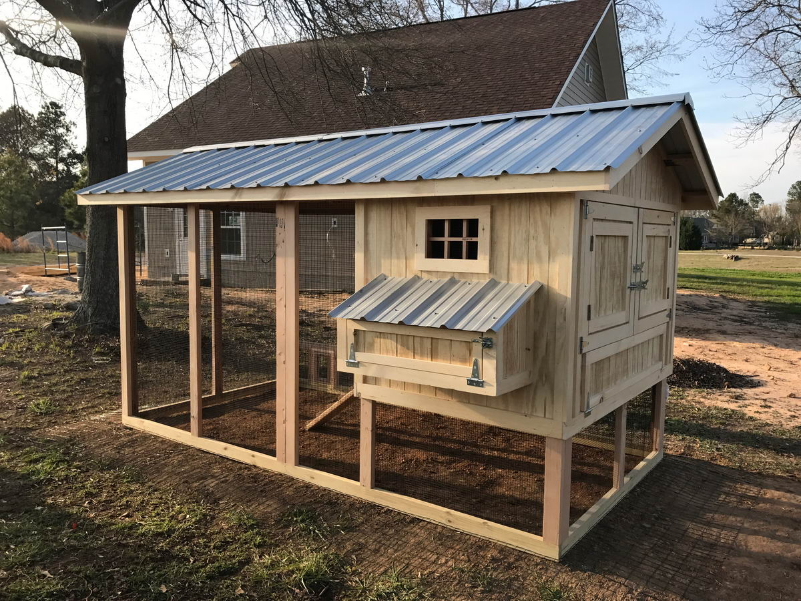

Кури

Розведення курей несучок та реалізація домашніх яєць – спосіб збільшення сімейного доходу
У сфері птахівництва одним з найбільш прибуткових напрямків вважається розведення курей несучок. Кури несучки дуже швидко ростуть і вже у 5 місяців починають нести яйця. Окремі породи здатні нестися круглий рік при достатньому рівні освітленості та підтримці потрібної температури у пташнику. А ціна на яйця домашніх курей несучок набагато вища, ніж на звичайні. Тому, налагоджений ринок збуту та своєчасне оновлення поголів’я курей здатні забезпечити постійний стабільний дохід. Розглянемо деякі нюанси організації такого бізнесу, як розведення курей несучок та реалізація домашніх яєць.
З чого розпочати бізнес з вирощування курей несучок?
Бізнес на курях може побудувати як сільський мешканець, так і мешканець великого міста. На селі простіше знайти шматок землі для пташника та вигулу птиці. Однак для будівництва курника не потрібна надзвичайно велика територія, його цілком можна розмістити на невеликій ділянці, що дозволяє утримувати курей і у місті. Якщо надалі планується розширення бізнесу з вирощування курей, то бажано офіційно зареєструвати фермерське господарство або зареєструватись як фізична особа – підприємець. Але природно, доведеться своєчасно звітувати перед фіскальною службою та справно сплачувати податки.
Спочатку слід визначитися із способом утримання курей:
Кліткове утримання. У цьому варіанті у курнику необхідно встановити стелажі для кліток, розробити систему годівниць та поїльників. Крім цього клітки необхідно регулярно чистити. До того ж будівництво або придбання кліток досить затратний захід. Кліткове утримання рідко застосовується при розведенні курей несучок. Такий спосіб переважно використовується великими фермерськими господарствами, що спеціалізуються на вирощуванні курей у промислових масштабах.
Підлогове утримання («floorsystem» або інша назва – «barnsystem»). При такому способі, кури вільно пересуваються по курятнику. Оскільки, ми хочемо продавати саме домашні яйця, на якість яких дуже впливає активність птахів і кількість одержуваного свіжого повітря, тому відкрите утримання курей з можливістю їх вигулу на вулиці нам підійде найкраще. Ще однією відмінною перевагою та особливістю цього способу є можливість самостійно готувати корми (коренеплоди, картоплю, харчові відходи), у той час як курей, що живуть в клітках, годують тільки комбікормом.
Спорудження та облаштування курника
Курник можна купити, орендувати або побудувати. Купівля кліток, годівниць і поїлок промислового виробництва здатна істотно збільшити об’єм початкових витрат на відкриття бізнесу з розведення курок несучок. Набагато дешевше обійдеться установка саморобних варіантів. Практично будь-який сарай цілком можна пристосувати під курник, утепливши стіни. У цьому випадку з бізнес-плану по вирощуванню курей сміливо можна виключати витрати на його будівництво.
Побудувати курник можна з дощок, шиферу або газосилікатних блоків. Останній будівельний матеріал більш дорогий, але зате забезпечить надійність і довговічність будівлі. Самий найпростіший варіант будівництва полягає в наступному:
- По кутах майбутньої споруди вкопують чотири дерев’яні колоди, так щоб висота курника була близько 2 метрів.
- Стійки з двох сторін зашивають дошками і покривають дахом. Щоб уникнути пролому даху під вагою снігу, краще зробити його скатним.
- У проміжок між дошками укладають утеплювач – дерев’яну тирсу, солому, хвою, сухе листя. Щоб у цій живильної масі не селилися гризуни, її перемішують з вапном (у пропорції 1 частина вапна до 25 частин утеплювача).
- Підлогу можна залишити земляною, а з настанням холодів утеплити і її. Спочатку шар утеплювача повинен бути 150 міліметрів. Через кожні 10-12 днів слід додавати по 50 міліметрів, так щоб до весни товщина утеплювача склала близько півметра. Процеси гниття, що відбуваються в органічному утеплювачі, будуть виділяти в навколишнє середовище додаткове тепло.
У курнику бажано влаштувати вікна та штучне освітлення. При цьому краще, щоб вікна розміщувалися на південній стороні. Якщо дозволяє планування ділянки, то лаз для виходу курей на вулицю роблять на східній стороні. Обов’язковою умовою є вентиляція. Це може бути звичайна кватирка чи інший вентиляційний отвір, закритий сіткою від мишей та щурів.
Уздовж задньої сторони курятника будують сідало на висоті 0,6-1 метр від підлоги. Уздовж бічних стін облаштовують годівниці та поїлки. Гнізда, в яких кури будуть нестися, можна зробити у вигляді полиць, застелених соломою та сіном, або використовувати дерев’яні ящики з аналогічним наповненням. Гнізд має бути декілька штук, щоб кілька птахів могли відкладати яйця одночасно.
Також відразу варто подбати про наявність вигулу – невеликого дворика. Мінімальний розмір такого дворика повинен бути близько 15 кв.м. Як вже було сказано, кури, які часто рухаються, швидше та краще розвиваються, що, відповідно, позитивно впливає на їх здатність нести яйця. Навколо дворику обов’язково спорудіть паркан, щоб уникнути нападів диких птахів і звірів. Над двориком зробіть навіс, під яким кури ховатимуться від жаркого сонця або від проливного дощу.
Купівля молодняку
Далі слід визначитись із кількістю поголів’я курей несучок, які необхідно придбати. Для початку достатньо буде купити декілька десятків курчат. Кількість придбаного молодняку залежить і від площі пташника. Так на кожні 10 квадратних метрів при підлоговому утриманні можна розмістити 20 курей, а в одній клітці розмістити 6-7 голів. На 10 курей необхідний мінімум один півень.
Одним із запорук успіху є правильний вибір породи курей для розведення. Так вибір м’ясо-яєчної породи курей дозволить будувати бізнес, як на продажі яєць, так і реалізовувати куряче м’ясо. У той же час, суто яєчні породи дозволять отримувати набагато більше яєць високої якості.
На думку експертів, найбільш продуктивними є наступні породи несучок:
- Леггорн;
- Ломан Браун;
- Хайсекс Браун.
Не варто заощаджувати на купівлі курчат, адже в майбутньому хороша порода може приносити багато яєць і забезпечить отримання постійного доходу від їх продажу.
Зменшення витрат на розвиток бізнесу можна домогтися купуючи курей несучок двотижневими курчатами. Правда є невеликий ризик купити замість курки півня, оскільки яскраво виражені статеві відмінності починають проявлятися після 2-3 місяців.
Допустиме придбання підрослого молодняку, поки у нього не почалася яйцекладка, тобто до 5-місячного віку. Обов’язково вивчіть відгуки про продавця, купуйте курчат тільки у перевірених людей і обов’язково щеплених.
Розведення, догляд та годування курей несучок
Для підтримки продуктивності та здоров’я курей в пташнику необхідно підтримувати певну температуру. Припустиме відхилення температури у курнику від -2 С до +27 С.
Курки здатні самостійно чистити пір’я і знищувати паразитів. Для цього в пташник потрібно поставити ящик з сумішшю піску та золи.
Один раз на три місяці слід здійснювати дезінфекцію приміщення, де утримують птахів. Під час цього заходу сідало, стіни та підлогу в курнику покривають сумішшю вапна з водою (на 10 л. достатньо 2 кілограм вапна).
Курчат необхідно годувати комбікормом, підібраним професіоналами. Для дорослих птахів допускається годування харчовими відходами, картоплею, коренеплодами. Щоб бізнес на курях процвітав потрібно обов’язково включати в раціон курей вітамінні добавки, крейду, яєчну шкаралупу. Влітку птиці, що мають можливість гуляти на вулиці, здатні самостійно знаходити собі їжу. Вони їдять комах і зелену траву. Зелень можна заготовити про запас, щоб взимку додавати її до кормів.
Обов’язково потрібно консультуватися з ветеринаром по всіх поточних питаннях, викликати його на об’єкт при найменшій підозрі на захворювання птиці. Ветеринар допоможе вибрати оптимальні види префіксів і комбікормів, створити умови для зміцнення імунітету курей.
Розведення курей несучок як бізнес, буде успішним при правильному виборі квочки, яка буде висиджувати потомство, а також і півня. Хороше потомство може принести тільки міцний та активний півень. При виборі курки слід звернути увагу на її гребінець. Вважається, що у хорошої несучки він досить великий і має насичене червоне забарвлення. Також важливим є будова тулуба і характер птиці. Спокійна за характером курка не буде часто покидати гніздо з яйцями, а м’який великий живіт забезпечить необхідне для розвитку курчат тепло.
Яйця для кладки вибирають рівні чисті та правильної форми. Курчатам, що лише вилупились з яєць, необхідно допомогти звільнитися від шкаралупи, а потім повернути в гніздо під квочку. Разом з мамою їм необхідно прожити близько 40 днів, якщо планується залишити їх у господарстві, або до моменту продажі.
Розрахунок рентабельності та передбачуваного доходу
Ключовим моментом бізнес-плану зі створення фермерського господарства для вирощування курей несучок, без сумніву є розрахунок рентабельності, терміну окупності витрат і можливого прибутку.
Спробуємо приблизно розрахувати витрати на організацію господарства, що складається з п’яти десятків курей та орієнтовний прибуток:
- Середня вартість двотижневого курчати 20 гривень. На покупку п’ятдесяти курчат необхідно викласти 1000 гривень.
- У середньому при змішаному годуванні курка з’їдає на рік 36 кілограм комбікорму або зерна. На все поголів’я піде біля 1800 кілограм. При середньоринковій вартості в 5 гривень за кілограм, витрати на сухі корми складуть на рік 9000 гривень. Додамо сюди вітамінні добавки та премікси. У підсумку витрати вийдуть приблизно 10000 гривень.
Тому, без урахування витрат на будівництво пташника та його обладнання, утримання 50 курей несучок обійдеться орієнтовно у розмірі 10000 гривень.
При грамотному догляді і збалансованому годуванні яйценосні породи курей можуть на рік нестися до 250 разів. Від 50 птахів можна отримати 1250 десятків яєць. Оскільки домашні яйця дуже цінуються у покупців, то і коштує десяток близько 35-50 гривень.
Налагодивши стабільні канали збуту яєць можна від 50 курок отримати дохід від 43750 до 62500 гривень на рік. Відповідно річний прибуток від продажу яєць буде 33,8-52,5 тисяч гривень. І це лише від 50 курей. Додаткову вигоду можна отримати від продажу курячого посліду, що є цінним добривом.
Підсумовуючи потрібно зазначити, що бізнес по реалізації домашніх яєць дуже вигідна ніша. Мінімальна рентабельність бізнес-плану з розведення курей для продажу яєць більше 200%. А враховуючи зростаючий попит на екологічно чисті продукти і низькі початкові вкладення, створення фермерського господарства з розведення курей несучок цілком можна розглядати як реальний спосіб збільшити дохід своєї сім’ї.